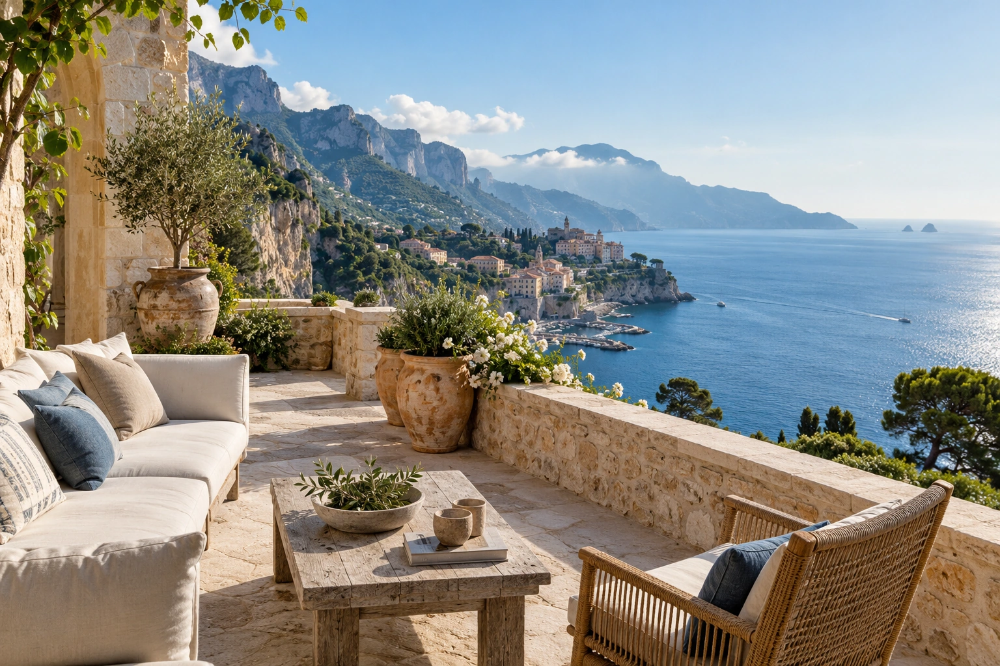

The Red Sea, Saudi Arabia
Sheybarah Island
Shebara’s mirrored villas make architecture part of the stay. Compare overwater and beachfront layouts before choosing the setting.
The Red Sea, Saudi Arabia
Above the water or beside the sand. Three island perspectives, with the villa, the arrival and the pace chosen together.
Your preferences. Thoughtful options. Personal attention throughout.

The Red Sea, Saudi Arabia
Shebara’s mirrored villas make architecture part of the stay. Compare overwater and beachfront layouts before choosing the setting.
The Red Sea, Saudi Arabia
Nujuma and The St. Regis offer different island interpretations. Select around villa layout, dining, family needs and the activities you care about.
A few considered examples. Your personal selection extends beyond these pages, with stays and privileges chosen around your preferences.
Sheybarah Island, Al Wajh Lagoon, Saudi Red Sea, Saudi Arabia
Reflective overwater villas make the island’s sea and sky part of the architecture, rather than a distant view.
Who it suits
Couples and design-minded travellers comparing an overwater stay with a beachfront villa.
Arrive with the island transfer already aligned to your flight, then give the first afternoon to the villa and the water around it. A snorkelling or diving outing can shape another morning if conditions and the chosen operator support it. Return for lunch and leave the hottest hours unhurried. As the light changes, the reflective architecture becomes part of the view again. Choose the beachfront or overwater category around your group, comfort and access needs, rather than assuming that the most photographed option suits everyone.
Getting there & getting around
Coordinate island arrival with Red Sea International Airport services; the transfer mode must be confirmed.
Before choosing
Confirm the exact island transfer, villa occupancy and children’s policy; published overwater age and occupancy wording needs clarification for families.
A different choice
Nujuma and The St. Regis Red Sea Resort offer different island designs; compare the actual arrival and villa choices.
Details checked · 26 Oct 2026
Ummahat Islands, The Red Sea, Saudi Arabia
For shell-inspired water or beach villas, marine activities and time around Saudi food and culture.
Details checked · 23 Oct 2026
Ummahat Island, The Red Sea, Saudi Arabia
For overwater Coral Villas or beachfront Dune Villas, with activities and facilities for different generations.
Details checked · 23 Oct 2026
| Property / setting | Style / suggested fit | Main reason to choose it | Accommodation | Facilities | Access / transport | Season / practical considerations |
|---|---|---|---|---|---|---|
| Shebara Sheybarah Island, Al Wajh Lagoon, Saudi Red Sea, Saudi Arabia | Island villas | Reflective overwater villas make the island’s sea and sky part of the architecture, rather than a distant view. | The resort has both overwater and beachfront villas; they are different accommodation settings. | Private-pool beachfront and overwater villas, with separate resort pool and spa experiences; compare the actual setting. | Coordinate island arrival with Red Sea International Airport services; the transfer mode must be confirmed. | Confirm the exact island transfer, villa occupancy and children’s policy; published overwater age and occupancy wording needs clarification for families. |
| Nujuma, a Ritz-Carlton Reserve Ummahat Islands, The Red Sea, Saudi Arabia | For shell-inspired water or beach villas, marine activities and time around Saudi food and culture. | For shell-inspired water or beach villas, marine activities and time around Saudi food and culture. | One- to three-bedroom villas with private pools; beach and overwater settings differ. | Neyrah Spa, Galaxea Diving Center and Conservation House. | Arrival and local transport planned around the chosen accommodation. | Operating calendar, dining service and facilities are reconfirmed for your dates. |
| The St. Regis Red Sea Resort Ummahat Island, The Red Sea, Saudi Arabia | For overwater Coral Villas or beachfront Dune Villas, with activities and facilities for different generations. | For overwater Coral Villas or beachfront Dune Villas, with activities and facilities for different generations. | One- to four-bedroom villas with private pools, subject to the selected category. | Spa, children’s club, pools and watersports; boat or seaplane transfers checked for the arrival. | Arrival and local transport planned around the chosen accommodation. | Operating calendar, dining service and facilities are reconfirmed for your dates. |
Browse Hotels & Private Stays ↗ · Private villas & group stays ↗
A selection to inspire your next evening. In every destination, we shape a shortlist around you, with further tables, experiences and privileges shared personally with our clients. Tell us your taste; your time is ours to look after.
Explore by cuisine & occasion ↗
One reservation or every evening of your stay. A wider world of possibilities, shared personally and arranged around you.
No upcoming dated occasions remain in this selection. Ask us what is happening around your visit.
Browse Events & Experiences ↗Arrive through Red Sea International Airport and continue on the transfer confirmed for the chosen island. Leave the first afternoon open: a swim, a slow meal and time to settle above the water or by the sand.
Another day might begin with a snorkelling or diving outing, subject to conditions and suitability, then a long lunch and a spa pause. Reserve the dinner you most care about in advance; island restaurant calendars can shape the evening.
Our attention continues beyond the reservation. Contact us 24/7 during your stay, including for a change of plan or a spontaneous idea. We explore suitable options and confirm the arrangements you choose.
Tell us what appeals, approximate dates and how many people are travelling. We explore the options; you choose the stay and the pace.
Begin an EnquiryContact us 24/7. Our team will respond personally; email info@zelrocprive.com whenever it suits you.
A little inspiration—or something already in mind?